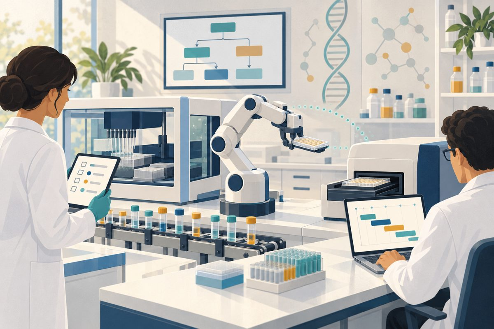
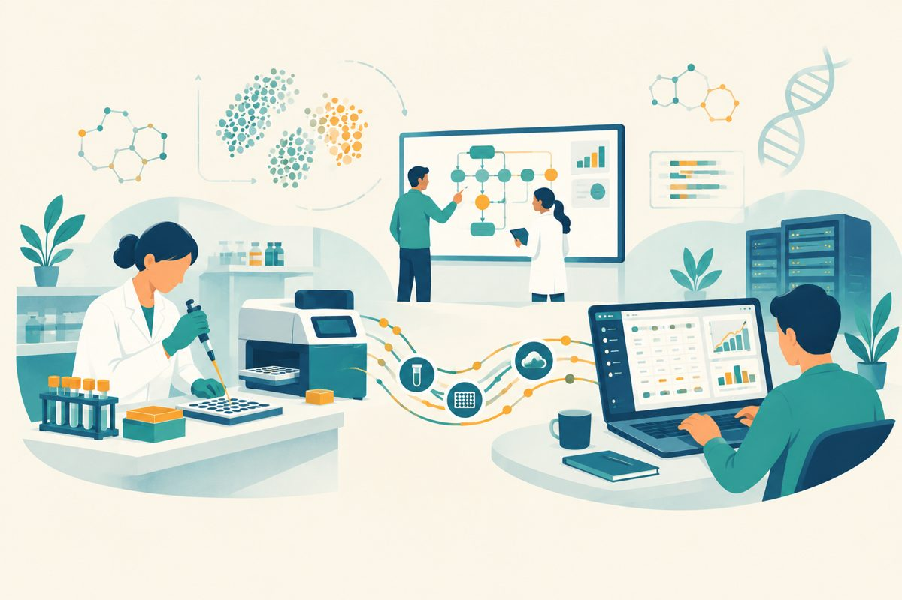
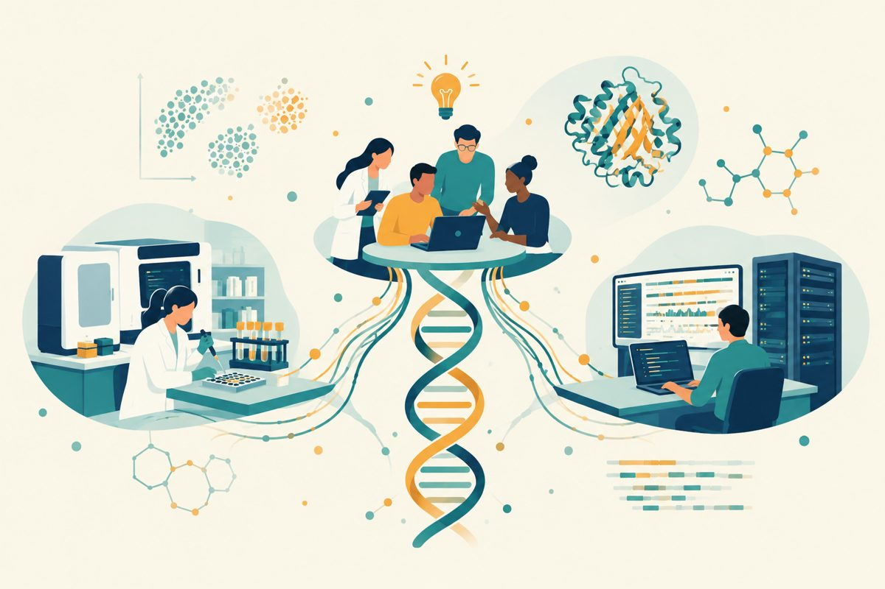
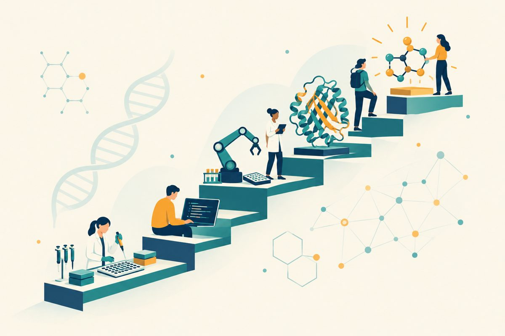

Resources
Career guides
Each issue goes deep on one sector: who hires, what every rung of the ladder asks for, the skills that get you in and the ones that get you promoted, what it pays, and how people move in from nearby fields.

The lab automation ladder
Liquid handling, controls and mechatronics, robotics and simulation, and autonomous-lab software: who hires, what each rung asks for, and how people come in from the bench, the factory floor and code.

The bio-software ladder
LIMS and clinical data consulting, applications science, deployment and product management: the corner of bio×AI where a lab background most often counts as the qualification.

The computational biology and bioinformatics ladder
Bioinformatics, genomics, single-cell and ML roles, what each rung asks for, and how far a bachelor's or a PhD takes you.

The AI drug discovery ladder
Protein design, computational chemistry and computational biology in drug discovery: the skills each rung asks for and what it pays.

The skills map, field by field
A career map across bio×AI with real pay bands, and the skills each field asks for.

The six doors into bio×AI
The six main ways into bio×AI careers, where a PhD is required and where it isn't, and what to learn first.